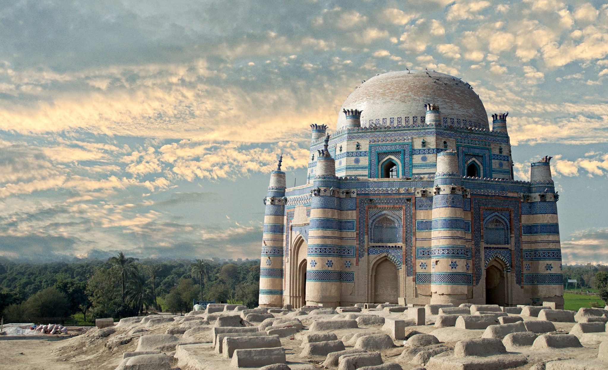

<div class="portfolio-single-load clearfix">
    <div class="custom-full-width-box">
        <div class="custom-container">
            <div class="custom-row align-items-center">
                <div class="custom-image-column">
                    
                </div>
                <div class="custom-text-column">
                    <h2 class="custom-heading">Uch Sharif
                    </h2>
                    <p class="custom-paragraph">
                        Uch Sharif, a historic city in southern Punjab, is renowned for its shrines and historical significance. The resting place of historical figures like Bibi Jawindi and Shah Jalaluddin Surkh, it attracts pilgrims and history buffs alike. Fort Munro, located nearby, offers panoramic views of the surrounding landscape, making it a popular destination for tourists.
                    </p>
                </div>
            </div>
        </div>
    </div><!-- .custom-full-width-box end -->

</div><!-- end single-project -->
